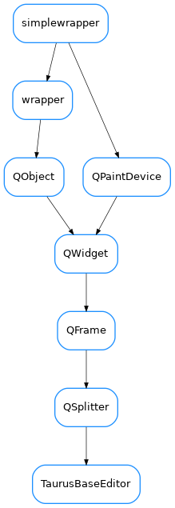

TaurusBaseEditor¶

-
class
TaurusBaseEditor(parent=None)[source]¶ Bases:
PyQt5.QtWidgets.QSplitter-
createMenuActions()[source]¶ Returns a list of menu actions and a list of IO actions. Reimplement in derived classes. This Base (dummy) implementation creates empty menu actions and a list of 5 dummy actions for the IO actions
-